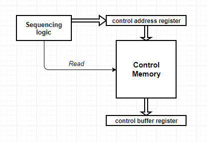

- In microprogrammed control unit , the logic of the control unit is specified by a microprogram.
A microprogram consists of a sequence of instructions in a microprogramming language.
These are very instructions that specify microoperations.
- A microprogrammed control unit is a relatively simple logic circuit that is capable of
- sequencing through microinstructions.
- generating control signals to execute each microinstruction.

- The concept of microprogram is similar to computer program.
In computer program the complete instructions of the program is stored in main memory and during execution it fetches the instructions from main memory one after another.
The sequence of instruction fetch is controlled by program counter (PC).
- The control signals associated with operations are stored in special memory units inaccessible by the programmer as Control Words.
- Control signals are generated by a program are similar to machine language programs.
- Micro-programmed control unit is slower in speed because of the time it takes to fetch microinstructions from the control memory.
- Advantage
-The decoders and sequencing logic unit of a micro-programmed control unit are very simple pieces of logic, compared to the hardwired control unit, which contains complex logic for sequencing through the many micro-operations of the instruction cycle.
-It simplifies the design of the control unit.
Simpler design means the control unit is cheaper and less error-prone to implement.
-It is also flexible as changes could be easily made to the design.
- Disadvantage
-Slower than a hardwired unit of comparable technology.
-Hardware cost is more.